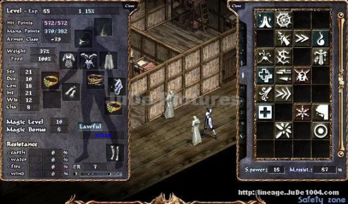
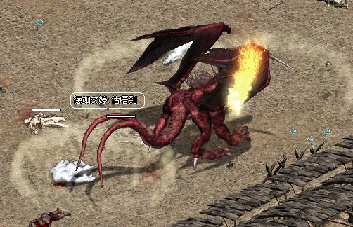

2003年2月25日 香港伺服器2月26日更新內容 - 寵物改1/8傷害 原文：香港天堂官方網站公告 1. 寵物、召喚或迷魅的怪物在攻擊玩家角色，又或在被玩家角色攻擊時，傷害值修改為之前的1/8。
2. 寵物、召喚或迷魅的怪物攻在擊玩家角色，又或在被玩家角色攻擊時，攻擊者的角色名稱不會變成紫色。
3. 玩家角色如殺死寵物或迷魅的怪物，將不會被守衛追捕。
4. 各村的無限大戰場地開放，各場地的等級限制如下：
地區 等級
威頓村 30 ~ 48
古魯丁 25 ~ 45
說話之島 10 ~ 20
銀騎士村莊 1 ~ 15 上文並沒有提在殺死寵物後會否扣正義值或變紅，另外玩家攻擊寵物時會否都是1/8呢？不過根據上文的意思，人與寵物的關係可能會改回1.6x時代的設定，即是人殺寵物不會紅或扣正義正，寵物殺人主人亦不會紅，然而寵物攻擊玩家時是否在任何情況下都只有1/8傷害？這點有待明天更新再測試。
香港城堡稅收與日本一樣出現問題來源：無名論壇 作者：月之宿命（香港太陽神海音城城主） 香港官方承認城堡收入的確出現問題，明天維修後會改回原來的設定，但並沒有提及會否補償以往少發的稅收，值得留意的是第一封和第二封的信件內容，如下：（真的懷疑官方最初有否仔細調查才回信） | 第一封信 親愛的玩家您好: 經調查後，香港伺服器中的城堡稅收系統跟以往的設定仍然一樣的，而閣下提及日本伺服器出現有關的問題，因各地伺服器的設定並不一樣，所以是不會影響香港伺服器的有關設定的，另外閣下說明其他城堡的稅收比更新前少的情況，這和更新的內容並沒有關係，而稅收是由城堡向相關的村落商店收取的，這定必跟玩家角色在各商店的購買力影響有關，建議閣下可向有關部份調查原因，如有問題歡迎e-mail給我們查詢,
謝謝您的來信 ~
阿波羅GM
NCgamania Co. Ltd.
如有問題歡迎您來信至 E-mail: server1@ncgamania.com.hk | 第二封信 親愛的玩家您好: 經調查後，香港伺服器中的城堡稅收系統因更新而受影響的情況，我們將會於明天早上修正有關的問題，
修正後所有城堡的稅收便會正常，不便之處，敬請見諒，如有問題歡迎e-mail給我們查詢,
謝謝您的來信 ~
阿波羅GM
NCgamania Co. Ltd.
如有問題歡迎您來信至 E-mail: server1@ncgamania.com.hk |
韓國伺服器65級法師 來源：Jude1004.com
英文翻譯：Lineage Compendium  在韓國的Paagrio伺服器上出現了65級的法師LeeGiGum Mage 2，你沒有看看錯，是法師喔！他可能是全世界最高等級的法師呢！ 他只花了14個月的時間便升上65級（極速！），他在去年9月時為57級，因此他只花了5個月時間便升了8個等級，他表示在52-60級時主要在龍監4樓打怪，而在60-65級則一個人在遺忘之島上打，而最近他亦減少了玩天堂的時間（每天15小時減至14小時．．．） LeeGiGum最初是一名18力 7敏 18體 12智 12精 8魅的法師，他分別加了3點力，3點敏及9點智，他有-79防，572HP及382MP，配合一對滅魔戒指有67%魔防，他並沒有提及他的打怪風格，不過他表示他非常留意打怪時的經驗值及金幣。 有一點有趣的是，他並沒有學齊所有魔法。
韓國測試伺服器2月19日更新內容 原文：韓國天堂官方網站公告
英文翻譯：Lineage Compendium 1. 修正了在亞丁城堡重登的錯誤。
2. 現在亞丁城要攻破三座副守護塔才可以攻擊主塔。
3. 修正了生命之泉延遲的錯誤。
4. 修正了賣遺忘之島船票的NPC所說的船期時間。
日本伺服器城堡收入出現錯誤 來源：日本天堂官方網站公告 日本伺服器在2月6日遺忘之島更新後並沒有將攻城時間延長至4天一次，但卻將城堡收入大幅度降低，日本天堂官方昨天承認了他們錯誤地把韓國的更新設定套用在日本伺服器上，因此在下次維護時間會將城堡收入改回2月6日前的設定，他們並且會根據伺服器記錄資料，為2月6日至維護日期前的城主補回少發了的稅收（日本伺服器的服務真好！）。 至於這個問題會否在香港伺服器出現呢？本網已經聯絡了香港太陽神海音，肯特，奇岩及侏城城主，他們都異口同聲地表示在更新後稅收的確明顯地少了，只有更新前的6成左右，但攻城時間卻沒有延長至4天一次，而在官方的更新內容中亦無提及城堡稅收會減少，因此可見香港伺服器亦錯誤地套用了韓國的設定（正確設定為攻城2天一次而稅收不變，或攻城4天一次而稅收只有原來6成），那麼一向以服務質素見稱的香港官方會否與日本官方一樣為此錯誤作出補償呢？還是會以各地區設定不同作為理由呢？
韓國測試伺服器檔案內容 昨天韓國測試伺服器更新了少量文字檔，在list.spr描述檔中中新增了綠色思克巴及Giant Stone，另外亦重覆加入了巨人(Giant Type C)，高侖(Golem)及巨人首領(Giant Boss)的描述，相信牠們可能與各職業45級任務有關。 而在desc-e.tbl中則加入了大量美國LoA伺服器的物件名稱，，不過相信他們不會加入正常的天堂伺服器中。而在desc-k.tbl則加入了二十多行的新物件名稱（韓文，相信亦與45級任務有關），經網上翻譯器翻譯如下（當然不太準確）： 龍的血液
古代鑰匙碎片
古代人之智慧
古代的惡魔記錄
青色思克巴
神秘的貝殼
夜之視野
古代的遺產
破舊的調查書
調查書的缺頁
保護者手套
瑪那斗蓬
勇氣皮帶
水精靈之弓 | 天上之劍
詹姆
巨人長老
巨人守護者
調查員
希托
沙比亞
沙比亞之罪
古代的亡靈
神秘岩石
山賊副頭目
守護者之袋
馬沙之袋
古代之HAFU |
無限大戰火龍極度加強  如果大家有留意無限大戰的話，應該知道當中的火龍是弱化了的，每一下攻擊只扣約50-120HP，使用橙水或白水已經可以輕易抵消，假如藥水充足的話更可以由火龍出現開始一直打到時間結束（5分鐘）。但昨天在香港太陽神出現的火龍卻使出了一招扣最少6XXHP的絕招，由於事出突然，出乎大家意料之外，結果大部分參賽者都慘死於火龍下。因此可能官方見火龍太弱，所以為火龍加入超級必殺技。 |